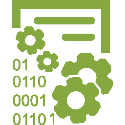

Gato: Vive la vida al máximo.Responsible: CodeGarden engineers support local competitions.Front End: CodeGarden projects the image that you choose for your company.Mobile-web: CodeGarden advances mobile-web healthcare. Expert Advice: Software rapidly sends expert diagnosis world wide.
where are we
Patzun,Chimaltenango,GuatemalaHasta creación
Patzun,Chimaltenango,GuatemalaSince 1962
Patzún,Chimaltenango,GuatemalaSince 1962
News
8 Jan 16: CodeGarden CTO, Polly Purebred, Addresses Global Healthcare Summit on security in mobile-web healthcare delivery.
5 Jan 2016: Luís Yu, Executive Vice President of Very Large Software Corporation, announced a VLSC partnership with CodeGarden, citing "the unparalleled innovation of the CodeGarden digital medical technologies team".
28 Dec 2015: CodeGarden completes acquisition of Flaco Atrás Software Sistemas, a Culiacán based company specializing in embedded systems for self navigating vehicles.
Products
My 3D Print: Three dimensional print design and control is available to the rest of us with this user friendly point and click user interface and ability to learn what you mean as you refine your designs. My 3D Print,
operational on all leading 3D printers, takes you from concept to commodity quicker than lubricated lightening.
Secure APP: The CodeGarden platform for building software and software intensive systems that are free from from exploitable vulnerabilities is now available. C, C++ and Java developers can now build software for financial
services, systems control and any other sector that must have its systems hardened against malicious intrusion.
A leading bank in South Africa needed to offer its clients comprehensive financial services while ensuring the utmost in privacy and security. This case study details the involvement of CodeGarden Certified Scrum Masters, from requirements elicitation
to deploying and supporting the system. The result not only led to a highly successful product for the Pretoria based customer but also informed the development of the CodeGarden Secure APP that is revolutionizing development of certifiably secure
systems.
Proper training leads to well prepared professionals. The Social Responsibility division of CodeGarden recently completed its first "1 employee - 10 trained developers" initiative with the Software Institute of Software Valley. This study tells the
story of the highly successful efforts of CodeGarden's Karl Crash Course, working with community leaders on site. 1,000 people trained and certified are going into the software workforce. CodeGarden made good on its promise to train 10 professionals
for each of the 100 developers working at the local CodeGarden facility.
Entry Level Software QA Analyst: You will be working with multiple groups and Offshore partners, testing systems and ensuring all the scenarios are validated as per the business needs.
Senior Full Stack Software Engineer: Required technical skills include C#,.ASP.NET MVC, SQL, Azure, JavaScript, JSON, jQuery, HTML, CSS and Bootstrap You will work on a small development team and need to be able to
solve a variety of problems.
Software Sales Manager: You will be responsible for generating revenue though sales of CodeGarden products and services. Reporting to you will be a team of 6 sales representatives. Proven ability to motivate and lead
sales teams is a priority. You will need to show the ability to learn the CodeGarden product line, communicate the value proposition to customers and ensure that the sales team also know the products, communicates the products and respects the integrity
of both CodeGarden and its customers.
To apply for an open position please click the button below and include a url to your online resume.
Mail to: jobs@CodeGarden.com


{kind=link}
{kind=link}